Nuestros Servicios
Ofrecemos una amplia gama de servicios especializados en ingeniería y laboratorio, agrupados por categorías principales

Servicios de Laboratorio
Ensayos Básicos
- 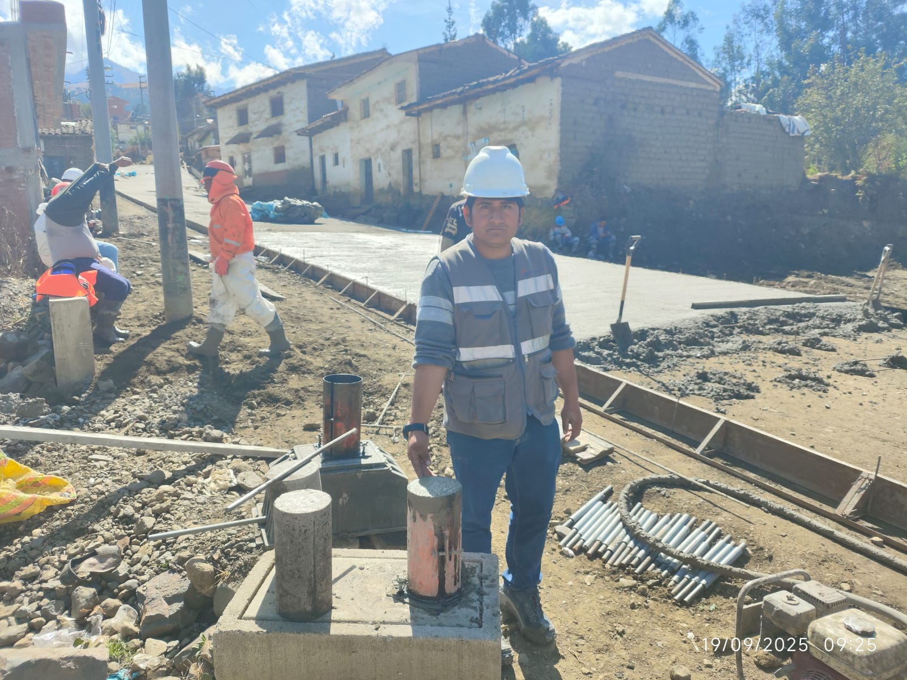Laboratorio de Mecánica de Suelos
- 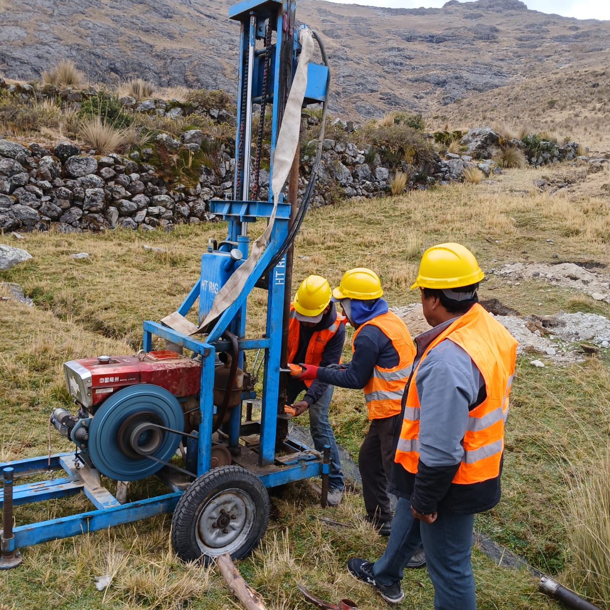Laboratorio de Ensayo de Materiales de Construcción
- 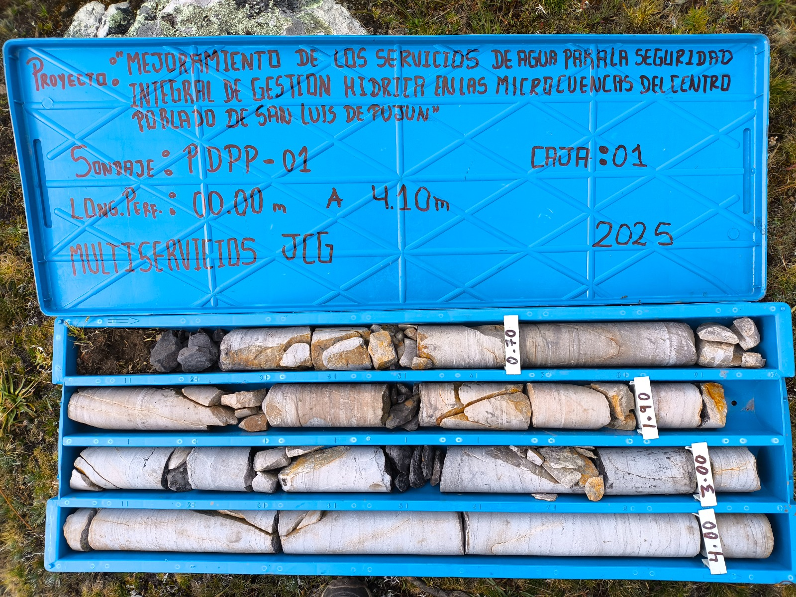Laboratorio de Análisis de Suelo
Análisis Especializados
 Laboratorio de Análisis
de Agua
Laboratorio de Análisis
de Agua- 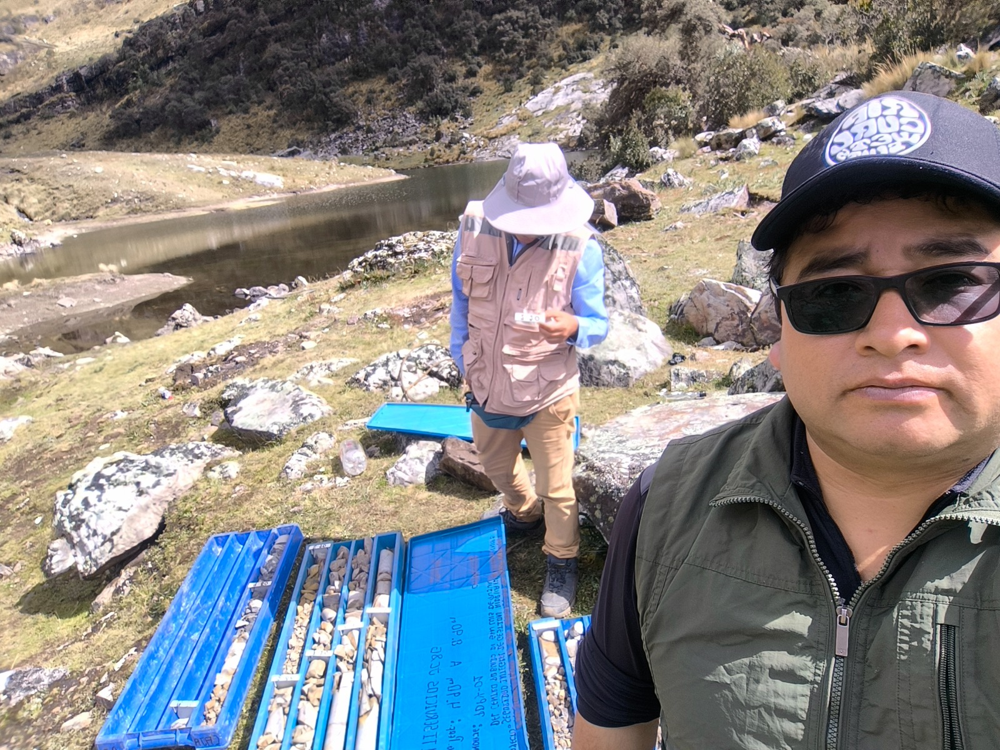Ensayos Básicos de Suelos
- Ensayos de Compactación
- Ensayos en Agregados
- Ensayos en Concreto
- Ensayos en Rocas
- Ensayos Especiales
- Ensayos In Situ
- Análisis Químicos
Servicios de Estudios
Levantamientos y Modelado
 Estudio de Topografía
Estudio de Topografía- 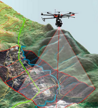Estudio de Fotogrametría
- Estudio de Geodesia
- 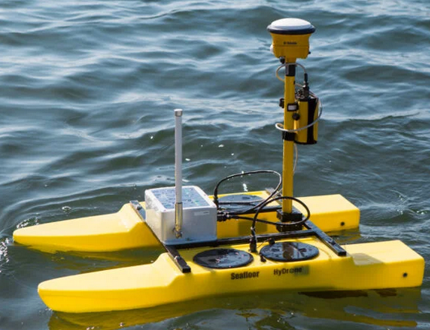Estudio de Batimetría
Análisis Geotécnicos y Ambientales
- 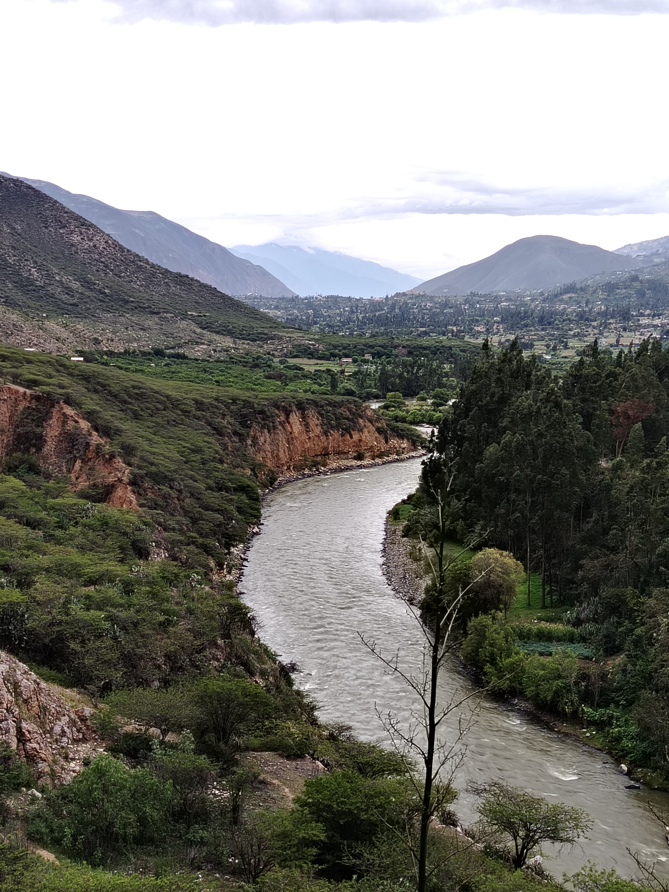Estudio de Medio Ambiente
- Estudio de Geología
- Estudio de Geotecnia
- Estudio de Mecánica de Suelos
- 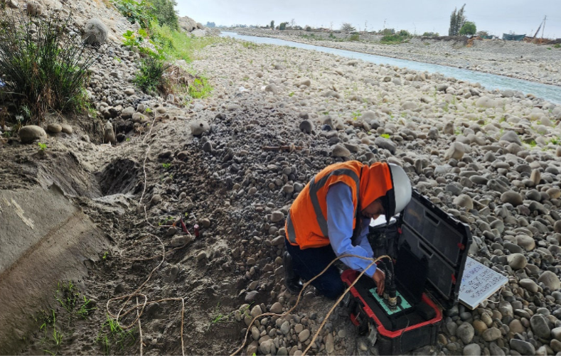Estudio Geofísico
.jpeg) Estudios de Ingeniería
Especializada
Estudios de Ingeniería
Especializada- 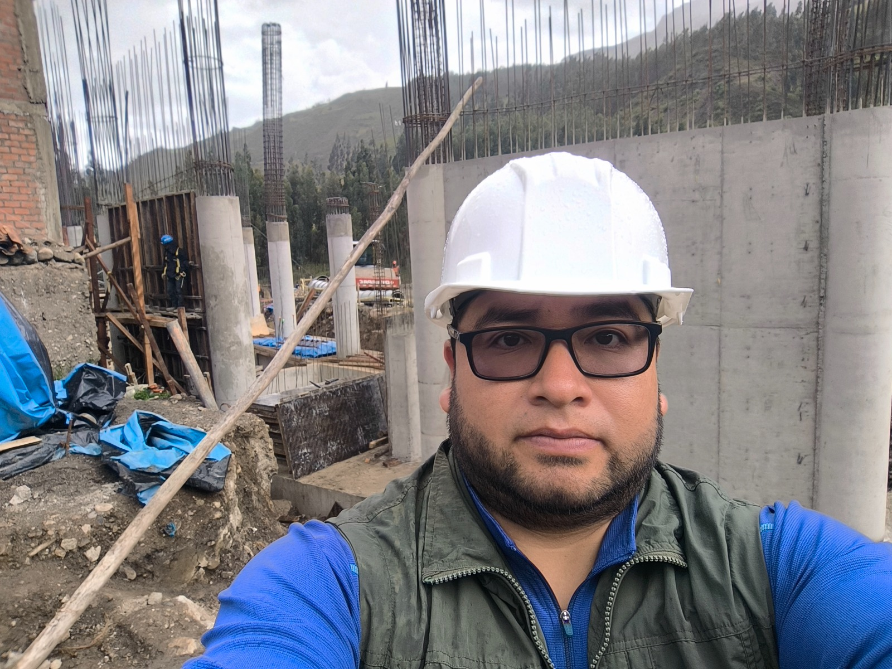Elaboración de Perfil Técnico
- Elaboración de Expediente Técnico
Supervisión, Ejecución y Servicios de Obras
Control y Gestión
 Supervisión de
Calidad
Supervisión de
Calidad Ejecución de Obras
Ejecución de Obras- Servicios en General de Mantenimiento e Implementación
Servicios Especializados
- Servicios de Geotecnia
- 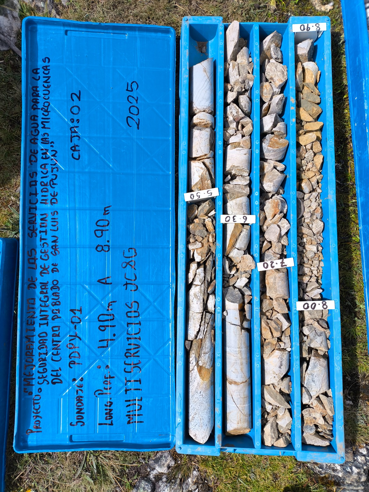Servicios de Minería
- 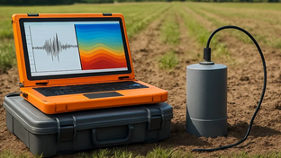Servicios de Geología
- 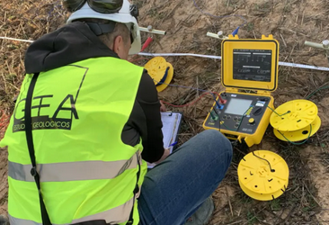Ensayos Geofísicos
- 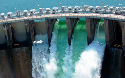Servicios de Hidráulica
- Servicios de Topografía